Ličenje v Mariboru — dnevno, večerno in poročno
Makeup in Maribor — day, evening and bridal
Макияж в Мариборе — дневной, вечерний и свадебный
Dobro ličenje ne prekrije obraza, ampak ga poudari. V studiu v Mariboru prilagodim ličilo vašemu tipu kože, priložnosti in svetlobi — od naravnega dnevnega videza do svečanega večernega in poročnega makeupa, ki zdrži ves dan.
Good makeup does not cover the face — it highlights it. In my Maribor studio I adapt the makeup to your skin type, the occasion and the light: from a natural daytime look to an evening and bridal makeup that lasts all day.
Хороший макияж не скрывает лицо, а подчёркивает его. В студии в Мариборе я подбираю макияж под ваш тип кожи, повод и освещение — от естественного дневного до вечернего и свадебного, который держится весь день.
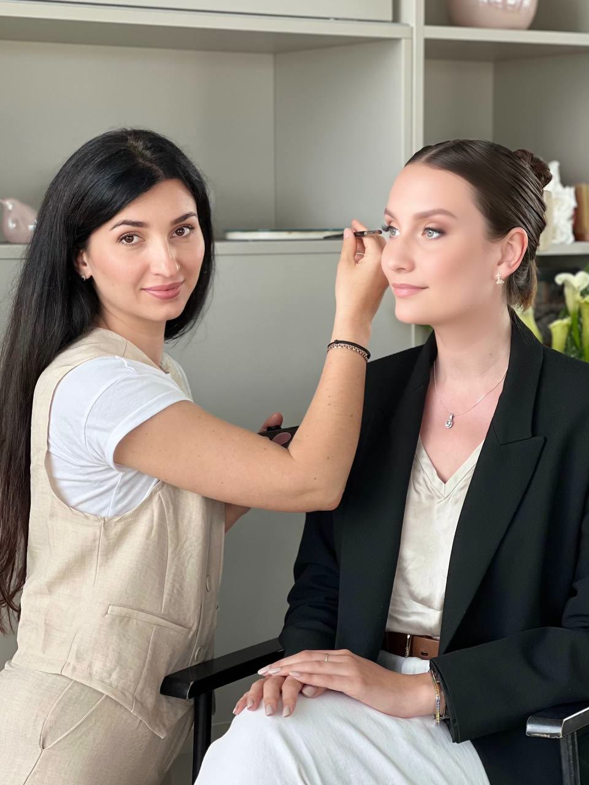
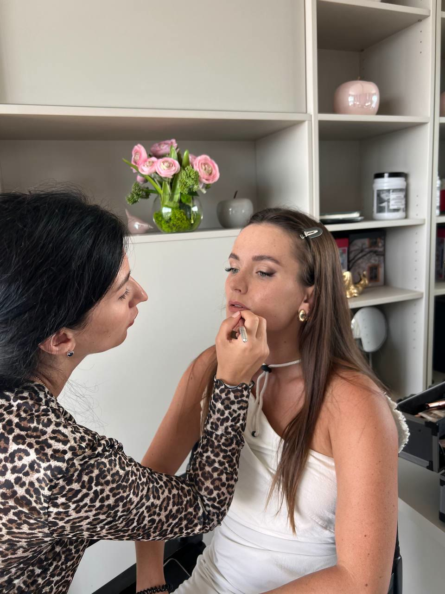
Katero ličenje izbrati
Which makeup to choose
Какой макияж выбрать
Dnevno ličenje je naravno in sveže — za službo, kosilo ali sprehod po mestu. Večerno ličenje je izrazitejše: poudarjene oči, definiran videz, primerno za zabave in dogodke. Poročno ličenje je najbolj zahtevno, ker mora zdržati dolgo, dobro izgledati na fotografijah in se ujemati z obleko ter pričesko. Če ne veste, kaj bi izbrali, mi povejte priložnost in uro dogodka — predlagala bom primerno različico.
Day makeup is natural and fresh — for work, lunch or a walk through town. Evening makeup is more expressive: defined eyes and a polished look for parties and events. Bridal makeup is the most demanding: it has to last long, look good in photographs and match the dress and hairstyle. If you are unsure, tell me the occasion and the time of the event — I will suggest the right option.
Дневной макияж — естественный и свежий: для работы, обеда или прогулки по городу. Вечерний — выразительнее: акцент на глазах, законченный образ для праздников и мероприятий. Свадебный — самый требовательный: должен держаться долго, хорошо выглядеть на фотографиях и сочетаться с платьем и причёской. Если сомневаетесь — скажите повод и время события, я предложу подходящий вариант.
Kako poteka ličenje
How the makeup session works
Как проходит макияж
Začnemo s kratkim pogovorom o želenem videzu. Sledi priprava kože: čiščenje, nega in podlaga, prilagojena vašemu tipu kože — suhi, mastni ali mešani. Nato sledijo korektor, puder, poudarjanje oči, obrvi in ustnice. Na koncu preverimo videz pri dnevni in umetni svetlobi, da veste, kako bo izgledal na fotografijah in zvečer. Ličenje traja približno 60 minut, poročno približno 90 minut.
We start with a short conversation about the look you want. Then comes skin preparation: cleansing, care and a base adapted to your skin type — dry, oily or combination. After that: concealer, foundation, eye emphasis, brows and lips. At the end we check the look in daylight and artificial light, so you know how it will appear in photos and in the evening. Makeup takes about 60 minutes; bridal makeup about 90 minutes.
Начинаем с короткого разговора о желаемом образе. Затем подготовка кожи: очищение, уход и тональная основа под ваш тип кожи — сухой, жирный или комбинированный. Дальше корректор, тон, акцент на глазах, брови и губы. В конце проверяем образ при дневном и искусственном свете, чтобы вы знали, как он будет выглядеть на фото и вечером. Макияж занимает около 60 минут, свадебный — около 90.
Cene ličenja v Mariboru
Makeup prices in Maribor
Цены на макияж в Мариборе
Dnevno ličenje 45 € (60 min), večerno ličenje 50 € (60 min), poročno ličenje 90 € (90 min), poskusno ličenje 40 € (60 min). Celoten cenik in ostale storitve najdete na strani Storitve.
Day makeup €45 (60 min), evening makeup €50 (60 min), bridal makeup €90 (90 min), trial makeup €40 (60 min). The full price list and other services are on the Services page.
Дневной макияж 45 € (60 мин), вечерний 50 € (60 мин), свадебный 90 € (90 мин), пробный 40 € (60 мин). Полный прайс и остальные услуги — на странице Услуги.
Kaj vključuje in zakaj zdrži
What is included and why it lasts
Что входит и почему держится
V ceno je vključena priprava kože, uporaba profesionalne kozmetike in zaključno utrjevanje. Uporabljam podlage, prilagojene tipu kože, in tehnike, ki preprečijo, da bi se ličilo usedlo v gube ali spremenilo barvo na fotografijah. Za dolge dogodke priporočam fiksirni sprej in korekcijski set — pokažem vam, kako ga uporabiti.
The price includes skin preparation, professional products and a final setting step. I use bases adapted to your skin type and techniques that prevent the makeup from settling into lines or changing colour in photographs. For long events I recommend a setting spray and a touch-up kit — I will show you how to use it.
В цену входит подготовка кожи, профессиональная косметика и финальная фиксация. Использую основы под тип кожи и техники, которые не дают макияжу залегать в складки и менять цвет на фотографиях. Для долгих событий рекомендую закрепляющий спрей и набор для коррекции — покажу, как им пользоваться.
Nega po ličenju
Aftercare
Уход после макияжа
Zvečer odstranite ličilo nežno, z micelarno vodo ali čistilnim oljem, nato nanesite hidratantno kremo. Ne spite z ličilom — koža se ponoči obnavlja in potrebuje zrak. Če imate občutljivo kožo, mi to povejte že pred ličenjem, da izberem nežnejše izdelke.
In the evening remove the makeup gently with micellar water or cleansing oil, then apply a moisturiser. Do not sleep in makeup — your skin regenerates at night and needs to breathe. If you have sensitive skin, tell me before the makeup so I can choose gentler products.
Вечером снимайте макияж мягко — мицеллярной водой или очищающим маслом, затем наносите увлажняющий крем. Не спите с макияжем: кожа ночью восстанавливается и должна дышать. Если у вас чувствительная кожа, скажите об этом до макияжа, чтобы я выбрала более мягкие средства.
Galerija ličenja
Makeup gallery
Галерея макияжа
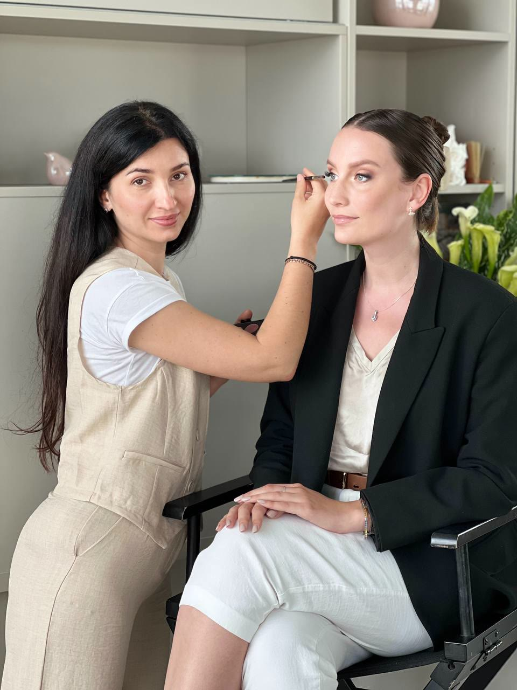
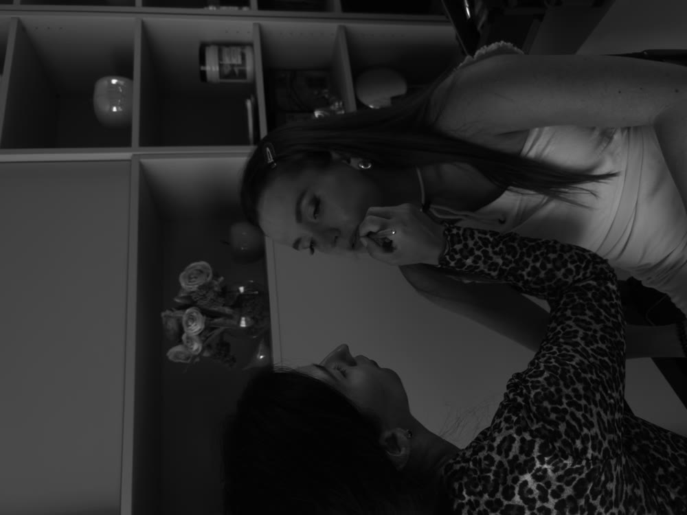
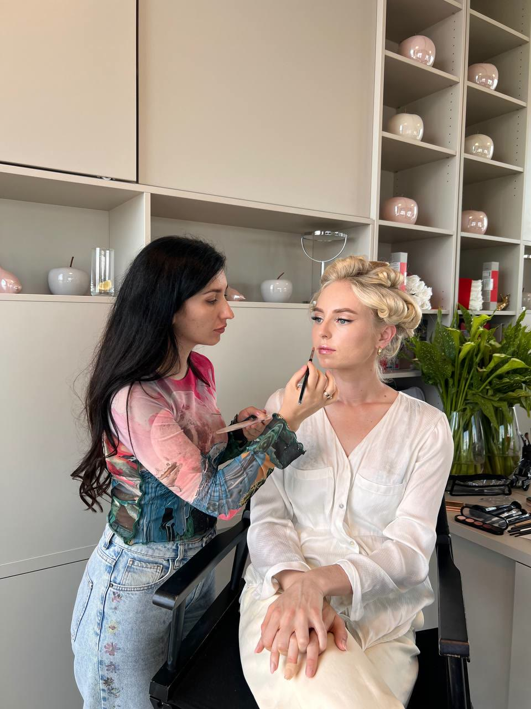
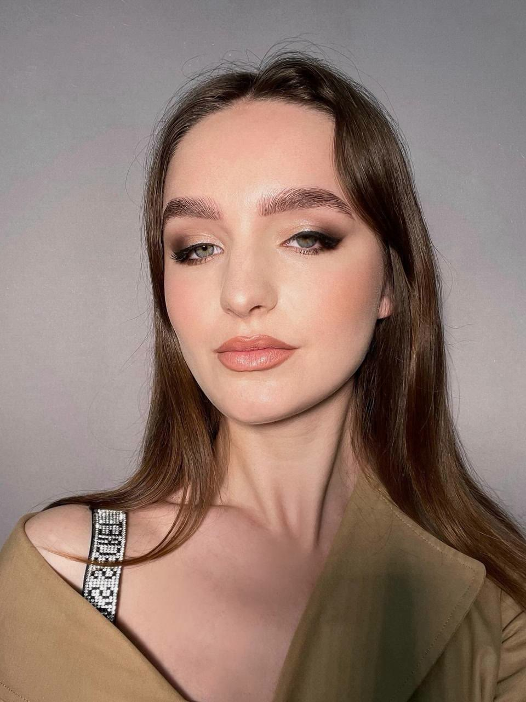
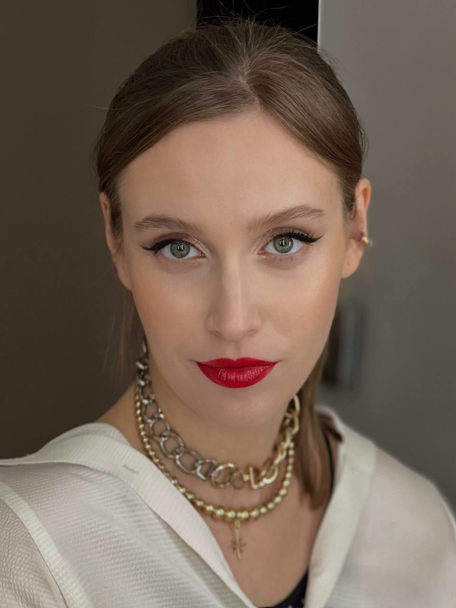
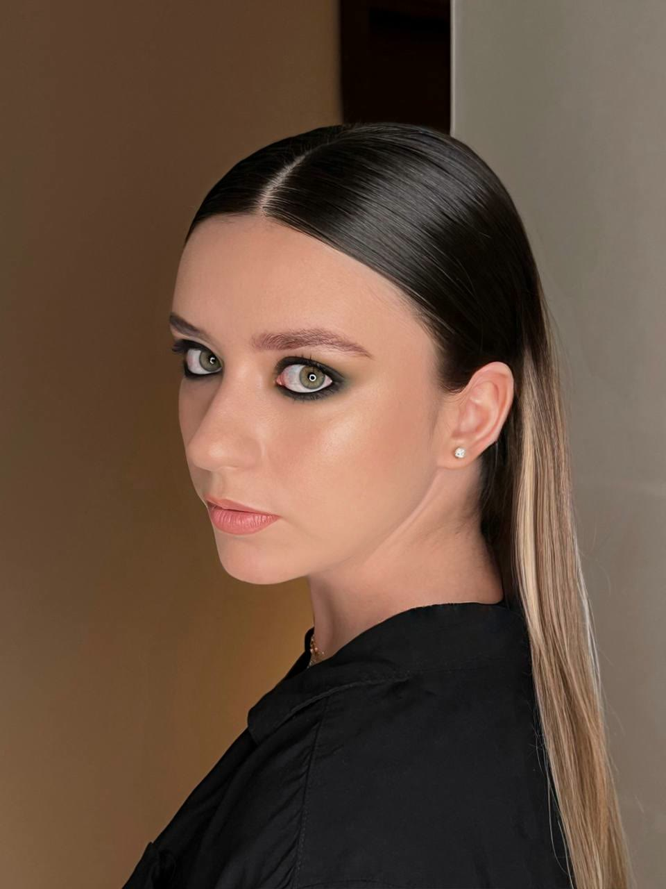
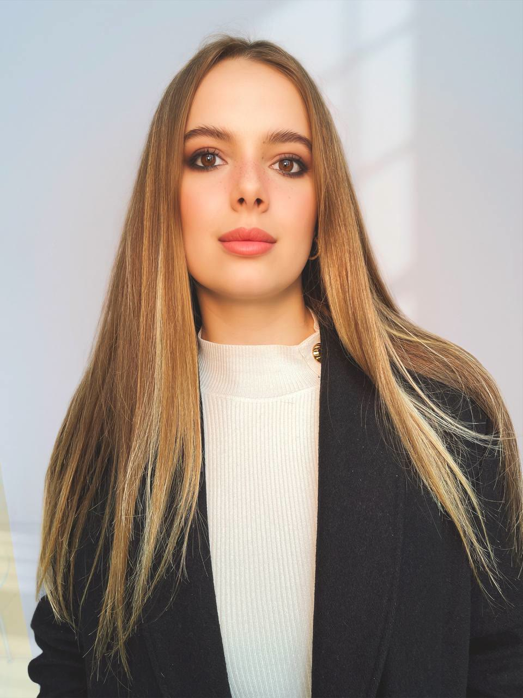
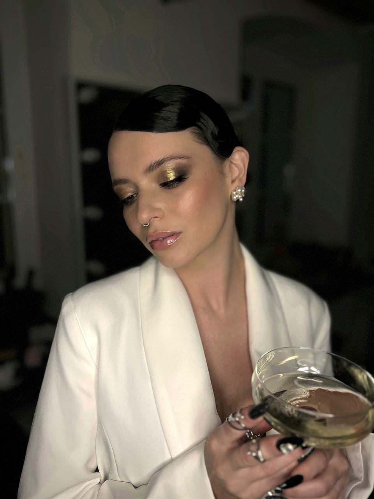
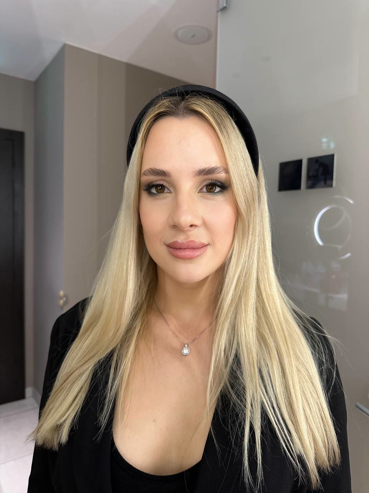
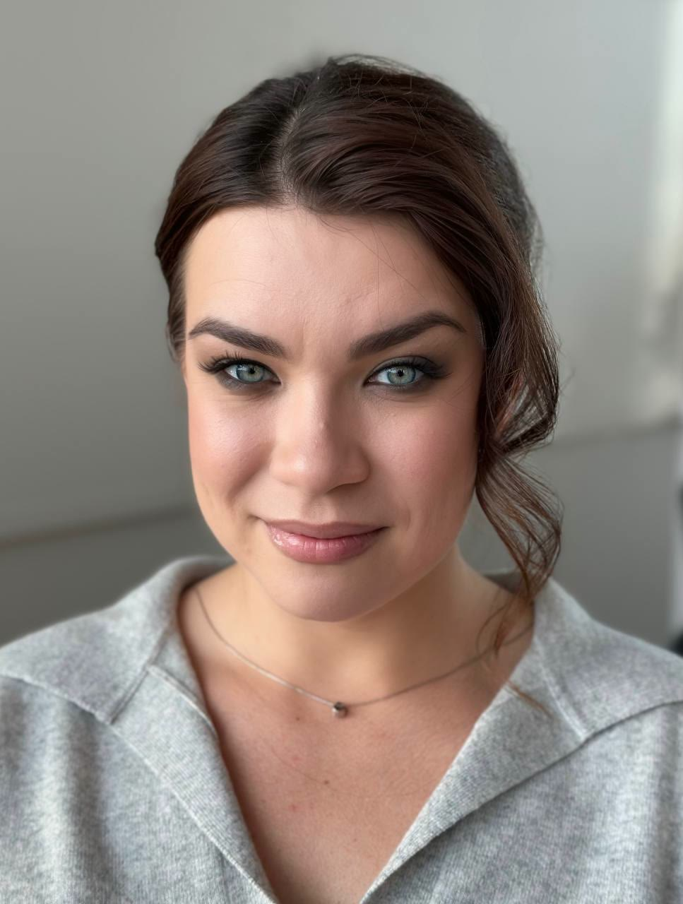
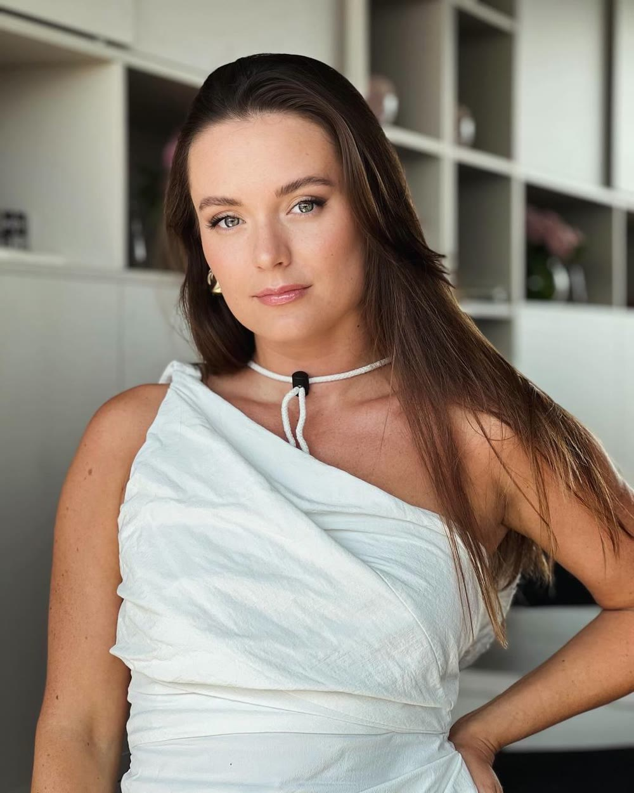
Pogosta vprašanja
Frequently asked questions
Частые вопросы
Koliko časa pred dogodkom naj se naličim?How long before the event should I book makeup?За сколько до события записываться на макияж?
Za poroko priporočam rezervacijo več mesecev vnaprej, za večerne dogodke pa vsaj teden ali dva prej. Termini ob petkih in sobotah se hitro zapolnijo.
For a wedding I recommend booking several months ahead; for evening events at least a week or two in advance. Friday and Saturday slots fill up quickly.
Для свадьбы советую бронировать за несколько месяцев, для вечерних событий — минимум за одну-две недели. Пятницы и субботы заполняются быстро.
Ali ličilo zdrži ves dan?Does the makeup last all day?Держится ли макияж весь день?
Da, če je koža dobro pripravljena in ličilo utrjeno. Pri daljših dogodkih priporočam korekcijski set za osvežitev.
Yes, if the skin is well prepared and the makeup is set. For longer events I recommend a touch-up kit.
Да, если кожа хорошо подготовлена, а макияж зафиксирован. Для долгих событий рекомендую набор для коррекции.
Ali moram prinesti svojo kozmetiko?Do I need to bring my own makeup?Нужно ли приносить свою косметику?
Ne, uporabljam profesionalno kozmetiko. Če imate izdelek, ki ga želite uporabiti, ga lahko prinesete.
No, I use professional products. If there is a product you want to use, you are welcome to bring it.
Нет, я использую профессиональную косметику. Если хотите использовать свой продукт — приносите.
Rezervirajte termin v Mariboru
Book your appointment in Maribor
Запишитесь в Мариборе
Termin rezervirate na strani Rezervacija ali prek WhatsAppa.
Book on the booking page or via WhatsApp.